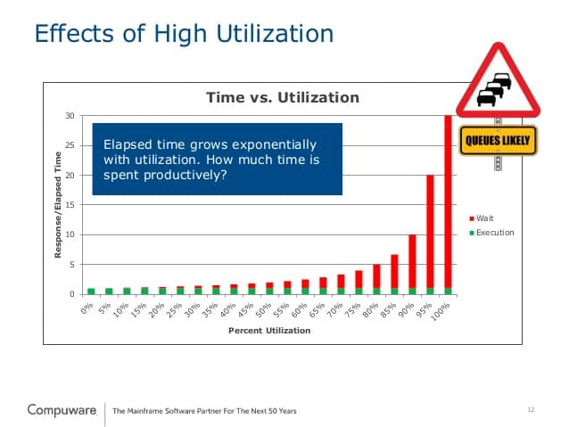
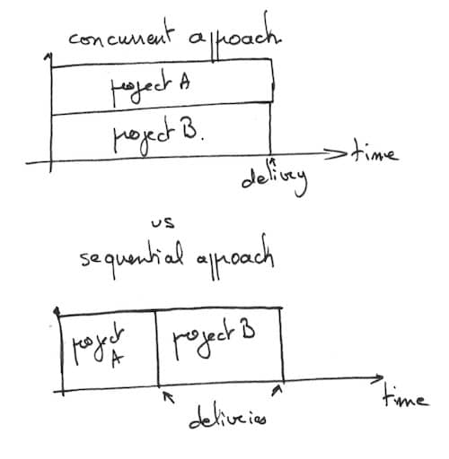
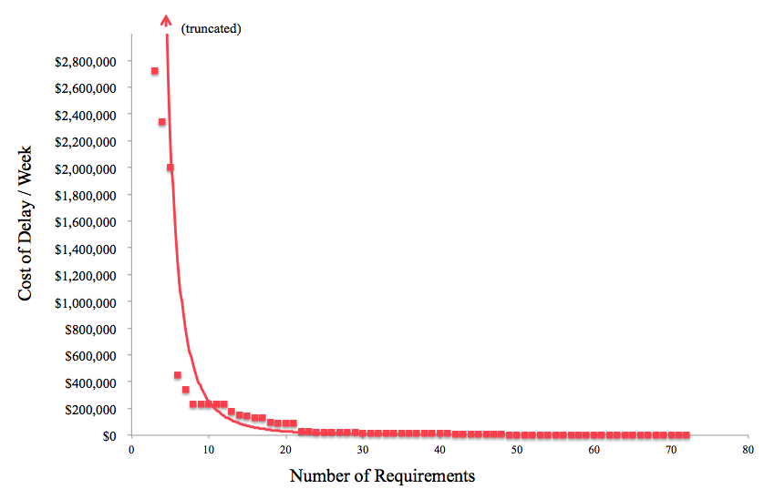

During the last 15 years, I’ve worked in many different teams. Every team has its own way of working. I’ve been at places where everyone seemed busy all the time. Did we deliver more ? No. Often quite the opposite ! The most productive teams I’ve been in used to do no more than 6 hours of solid work every day …
What’s the reason behind that ?
In Lean Management theory, lead time is the time it takes to get a feature from customer request to delivery. Here is a graph that draws typical lead time over factory load (1 – idle time percentage).

What does all this tell us ?
When utilization becomes too high, people start multitasking. As multitasking increases, productivity drops, delaying projects. As a consequence, products are late to hit the market. On the other side, a low utilization means paying people to be idle. That might put any company out of business. Factory managers’ best practice is to limit Work In Progress by loading their assembly lines around 80%. Not too high to avoid over-utilization, but not too low to avoid wasting time.
Every software product is new product development (Craig Larman). As such, they are way less predictable than any assembly line. It means we need more slack to absorb unexpected variations (Donald G. Reinertsen). This tells us that we should have more than 20% of slack in our schedules and plannings. Unfortunately, overloading and multitasking is a wide spread disease in the software world.
How to get rid of task switching ?
The answer is obvious : prioritization ! Only work on the most important item at a time. It’s not because we start everything now that they’ll sell them earlier ! It’s quite the opposite in fact !

Here is another advantage to prioritization. It decreases the time between start and completion of a feature. This, in turn, decreases the likelihood of building something obsolete.
One last thing about prioritization …

This graph tells us that a small fraction of the features bring most of the value, while a very large portion of the features bring almost no value … As puzzling as this graph may be, it’s also a wonderful opportunity. If we manage to focus one the most valuable features only, we can save a ton of work, while being more effective ! Lean startup and market research are techniques to identify these features up-front.
💡 You don’t need more time, you just need to decide ! Seth Godin
Culture issue
Becoming more effective by banning overtime, enforcing monotasking and being serious about prioritizing ? These ideas are heresy in some workplaces ! Have a look around you. Are people overworked ? Are they fire fighting all the time ? Are they drowning in multitasking ? If it’s the case, I bet there’s a wide scale lack of prioritization issue at your workplace.
People at the top of the company need to control the overall WIP. If they don’t, multitasking will catch you up, however you try to escape it. Multitasking can be obvious e.g., when we need to work on different projects at the same time. It can also sneak in as maintenance, or unrelated meetings marathons. Another symptom is when developers need to take on “submarine” refactoring initiatives. From experience, that’s often the case in sales driven companies. Where any customer request is agreed and sold, regardless of the company’s capacity.
💡 Require everyone in product and engineering to read Principles of Product Development Flow by Donald Reinertsen. John Cutler
There’s an interesting parallel in the Stephen R. Covey’s 7 Habits of Highly Effective People. He says we should drop the urgent and not important for the important and not urgent. In software term, it means spending time on important and long term work rather than short term stuff. We should do more refactoring, hiring, training and continuous improvement. We should stoping building features we are not sure of the value.
Let’s summarize. Here are my advices to work less and be more productive. Enforce hard WIP limits at all levels. Do serious prioritization. Provide enough slack. In my next post, I’ll show how XP addresses these issues.